Exploring Planets
Different Planet Pictures
Different kinds of planets will each have a unique look. This section is a glossary of planet pictures.
A Colonized, Profitable Planet
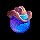
This is a planet where your population has grown to the point where it can support itself. It can even supply money for your interstellar effort. Your home planet is like this.
A Potentially Profitable Planet
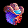
A planet in this category, given enough time and effort, could be profitable someday. To make it profitable, you'll have to terraform it until it's close to 72 and give the population time to grow.
A Semi-Habitable Planet
A planet between 0.4 and 0.5 G, or between 2.0 and 2.5 G falls into this category. Eventually, this type of planet can be made profitable. Still, it's never going to be very profitable, so often it's best to mine this kind of planet and leave it.
An Inhospitable Planet
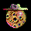
A planet with gravity greater than 2.5 G or less than 0.4 G will be almost impossible to make profitable. Still, on rare occasions it can be a good idea to keep such a planet around for strategic reasons. The rest of the time, just mine all the Metal from it and "Abandon" it - don't bother to terraform it.
A Strip-Mined, Inhospitable Planet
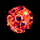
This kind of planet won't ever turn a profit, and doesn't have any metal you can mine. Yuck! Unless it has some strategic importance or you're afraid there's an enemy base there, just leave this junk alone.
An Unexplored Planet
This is a planet that you've never been to.
A Soon-to-be-explored Planet
If you send a fleet to an unexplored planet, the question mark will turn into an exclamation point, letting you know that you'll know more soon. If you have Show Fleet Paths on in the "Preferences" dialog, you'll see a line for the fleet aimed at this planet.
An Enemy Planet
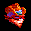
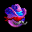
Any planet where you lose a battle becomes an enemy planet. A planet will stay an enemy until you send another fleet there and win a battle. In fact, you might send a fleet to an enemy planet and find no one, or a different enemy there. All the information you have about planets is based on the last time you were there. If it's been a long time since you were at a given planet, your information about that planet may be out of date.
Enemy planets look like a variety of bad guys. Each enemy player will have his own look, so you can tell who you're fighting where.
An Ally Planet
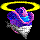
When you ally with another player, his icon on the Star Map will change to reflect this. His icon will become a lighter color, and he'll get a "halo" over his head, since he's a good guy now.
A Battle Planet
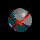
Occasionally, you'll send a fleet to a star you've never been to and find an enemy fleet similar in strength to yours. If you and the enemy are both killed, you'll get this planet picture. It says you haven't explored the planet yet, but you know bad guys are near. You'll also see this planet if you notice a large battle from two other players fighting at a planet you haven't yet explored.
Satellites
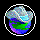
If you put satellites up at any planet, that planet will have a circle around it in the star map to let you know that it's defended.
Fleets
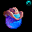
If you have a fleet at any planet, a small picture of a fleet will show up on the upper right hand corner of the planet to let you know. It looks like a moon, but don't let that fool you.
Allied Fleets
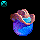
If you see friendly fleets parked at one of your planets, they'll have a fleet symbol on the upper left of the planet (instead of the upper right, where your fleet symbol goes).